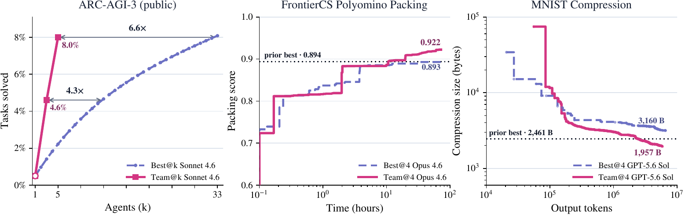
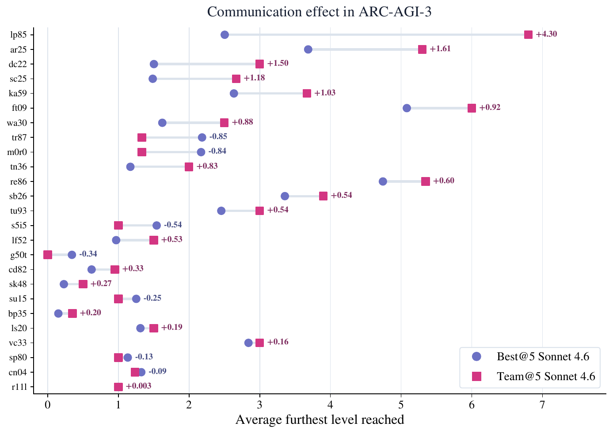
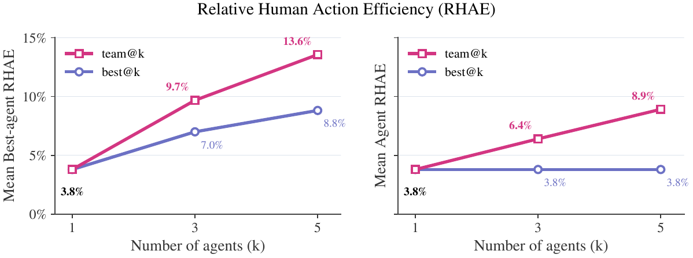
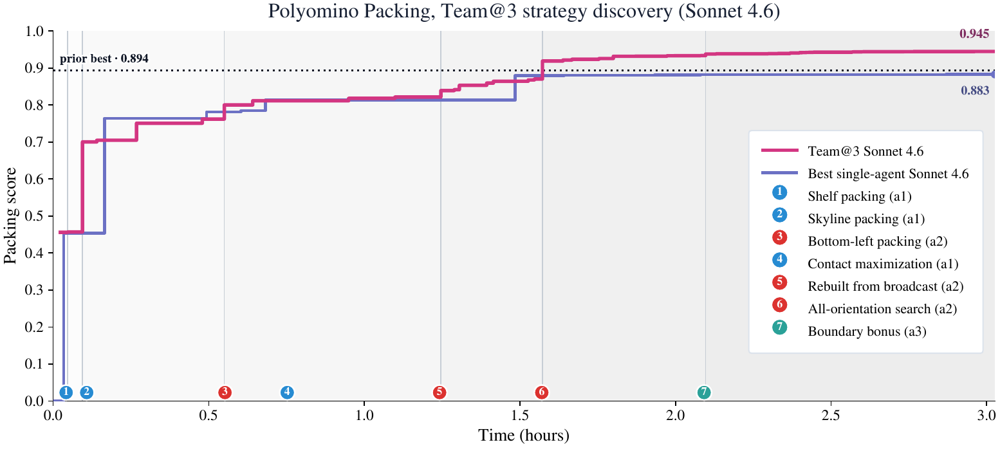

Science advances through collaboration, but agentic systems barely use it. On ARC-AGI-3, k communicating agents match 4k independent ones, crack tasks no lone agent solves, and the recipe transfers to real research tasks.
Agents with no assigned roles communicate through a shared directory while working, so one agent's breakthrough can push the whole group forward instead of dying in isolation.
A team of k communicating agents matches the success rate of four times k independent agents, and the communication advantage compounds as k grows — an efficiency gain, plus tasks that flip from impossible to reliable.
With enough compute the effect carries to research work: polyomino packing beats the prior best-known score and MNIST classifier compression surpasses the best-known human solution.




Source table · Proportion of trials reaching within d levels of a full solve, averaged over 25 (6 rows)
| Levels from target | team@3 | best@3 | best@13 | team@5 | best@5 | best@33 |
|---|---|---|---|---|---|---|
| 5 | 52.8 | 45.4 | 63.9 | 64.1 | 52.8 | 69.5 |
| 4 | 28.2 | 25.8 | 46.5 | 33.6 | 32.9 | 55.4 |
| 3 | 16.6 | 9.7 | 20.8 | 22.9 | 12.8 | 31.3 |
| 2 | 7.2 | 5.0 | 9.3 | 16.2 | 6.1 | 15.8 |
| 1 | 4.8 | 2.6 | 6.3 | 10.0 | 3.7 | 10.2 |
| (Solved) 0 | 4.6 | 1.4 | 4.7 | 8.0 | 2.2 | 8.1 |
Abstract
Science advances not in isolation but through collaboration, yet existing agentic systems capture little of this. Whether communicating agents help remains an open question with mixed prior results. We show that test-time communication can substantially outperform independent parallel attempts on challenging tasks, where sharing a breakthrough can push the whole group forward. We first study the effect of scaling multi-agent test-time communication, where agents have no predefined roles and communicate via a shared directory, on ARC-AGI-3, a benchmark requiring novel problem solving. We find that a team of $k$ communicating agents, team@$k$, matches the success rate of $4k$ independent agents, and this advantage grows with $k$, suggesting gains compound with scale. The effect is not merely efficiency: a task that no single agent can solve, a team of agents can solve reliably. Furthermore, these gains transfer to research-oriented tasks, given sufficient compute. On polyomino packing, communicating agents outperform best@$k$ and exceed the prior best-known score. On MNIST classifier compression, communication surpasses the best-known human solution. A team of four agents produced a 1,957-byte classifier submission achieving 99.4% test accuracy, smaller than both the best-known human solution and the best single-agent result. These gains are not unconditional. Independent agents may outperform communication when compute is limited or when a clear measure of progress is absent. However, under sufficient compute and clear feedback, multi-agent communication consistently yields stronger results.